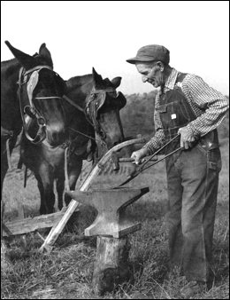

|
Robert Bowman, from: The Appalachian Photographs of Earl Palmer.
|
Page Under Construction
|
Photo Credit: Speer, Jean Haskell, The Appalachian Photographs of Earl Palmer, University Press of Kentucky;
ISBN: 0813116953; (January 1990). The wonderful little book on Earl Palmer’s photography is still in print.
|